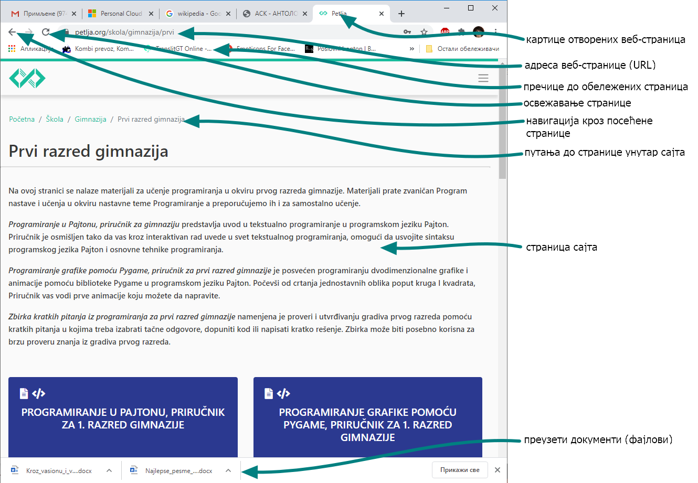
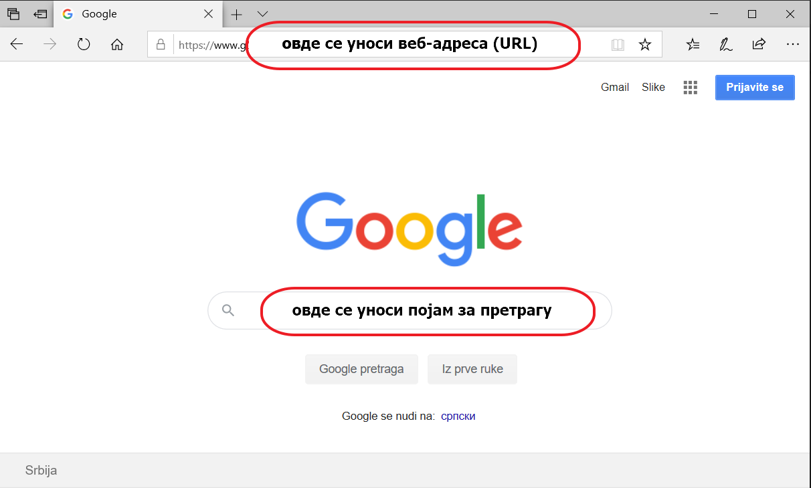
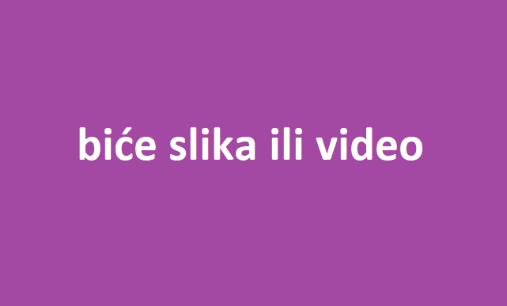
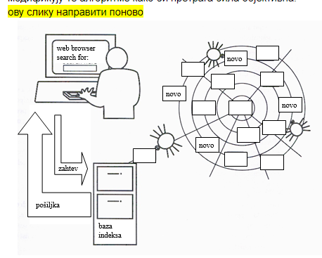

Интернет сервиси¶
Увек када је уређај повезан на интернет, каже се и да је онлајн (енгл. online) а када је веза прекинута, каже се да је уређај офлајн (енгл. offline). Обратите пажњу, у српском језику ове речи, иако енглеског порекла, пишу се онако како их изговарамо. Неправилно је написати онлине исто колико би било неправилно и да напишемо, на пример, телевисион…
Као што се из претходне лекције може закључити, интернет представља инфраструктуру. Као што у граду имамо инфраструктуру - улице, бандере са кабловима, цеви испод улица, па на њима функционишу различити сервиси: градски саобраћај, комуналне услуге, водовод, снабдевање струјом, тако и на интернету постоје различите услуге - сервиси. У овом моменту поменућемо само три: електронску пошту, пренос датотека и веб (WWW).
Пренос датотека (енгл FTP, File Transfer Protocol) је сервис који омогућује директно слање датотека. Један од првих сервиса на интернету.
Електронска пошта, имејл (енгл. email) је сервис путем којег корисници шаљу „писма”, односно пошиљке које се састоје од текста, али и других мултимедијалних прилога. Адресирају се адресама корисника, које смо већ описали када смо говорили о врстама адресирања на интернету. Примери адреса: mika.petljanovic@gmail.com, mika.petljanovic@outlook.com, су адресе једне особе на два различита мејл-сервиса, mika.petljanovic@sbb.rs би била адреса код једног интернет-сервис провајдера, а mika.petljanovic@vigimnazija.edu.rs би била адреса на домену школе. Ово су четири потпуно различите адресе. У сваком од ових случајева, пошиљка стиже на сервер конкретног мејл-сервиса, а корисник може да приступи сервису и уносећи своје корисничко име и лозинку може да приступи пошти у свом „поштанском сандучету” (енгл. inbox). Такав приступ се још зове „вебмејл”, јер се електронској пошти приступа путем веба (о којем говоримо у следећем пасусу). Постоји могућност да се на рачунар инсталира програм који се синхронизује када је рачунар повезан на интернет тако да је могуће касније прегледање поште и када је веза прекинута. Ово је погодно ако немамо сталан приступ интернету. И овде једна језичка напомена: у српском језику, без обзира да ли је текст писан ћирилицом или латиницом, пише се имејл а не емаил. Знак „@” који улази у састав сваке имејл адресе раздваја корисничко име од домена и чита се „ет”, од енглеске речи „at” што значи „при”, „на”. Зове се још и „мајмунче” или „манки” (од енглеског назива тог симбола monkey).
Веб, енгл. WWW - World Wide Web, што би се могло превести као „широм света разапета мрежа” - данас најраспрострањенији сервис, који преставља мрежу садржаја (заправо веб-страница) на интернету, међусобно повезаних везама - линковима. Он обједињује многе, доскора различите сервисе - и хипертекстуалне документе и електронску пошту и пренос података, али и телефонирање путем интернета, електронско плаћање и много тога још.
Можда овај израз видиш први пут, али сасвим сигурно да хипертекстуалне документе користиш, чак и проучавајући ове лекције. То је текст у којем се налазе хиперлинкови, линкови или хипервезе, баш овако. -то су речи (обично обојене плаво и подвучене, али могу да изгледају и другачије) и текстови који, када се на њих кликне мишем, воде на неку другу веб страницу или други део исте странице.
Хајде сада да детаљније упознамо два већ поменута сервиса која сигурно користиш, али вероватно не знаш све могућности, а можда нешто од тога и не користиш на сасвим исправан начин.
Прегледање веба¶
Веб је сервис путем којег ти управо сада проучаваш овај курс. За приступ веб садржајима и њихово прегледање потребно је да покренеш програм „веб прегледач” (веб браузер, енгл. web browser). Најчешће коришћени веб-прегледачи су: Гугл кроум (Google Chrome), Мајкрософт еџ (Microsoft Edge), Мозила фајерфокс (Mozzila Firefox), Опера (Opera) и Сафари (Safari). Веб садржаји су адресирани помоћу УРЛ адресе (већ смо описали шта је то, подсети се ако се не сећаш лекције са претходног часа). Садржај веб странице може да буде текст, хиперлинк, слика, видео, звук.
Слика: Прегледање веб странице
На страницама постоје хиперлинкови, као што смо већ напоменули, то су места која воде до других веб-страница.
Кликом на хиперлинк (често се каже и скраћено, линк) отвара се страница ка којој он води. У зависности од тога како је креирана изворна страница, она друга ће се отворити уместо ње у истој картици истог прозора или у другој картици или прозору. Десним кликом на линк отвара се мени који нам нуди додатне могућности:
отворити линк у новој картици,
отворити линк у другом прозору,
отворити линк у прозору без архивирања (за безбедно коришћење на јавним или туђим рачунарима),
у случају да је исти корисник пријављен на још неком уређају, појавиће се и опција за слање линка на други уређај
чување странице на свом рачунару,
копирање адресе ка којој води линк,
преглед изворног HTML кода.
Слика: Мени који се добија десним кликом на хиперлинк
Кликом на хиперлинк (често се каже и скраћено, линк) отвара се страница ка којој он води. У зависности од тога како је креирана изворна страница, она друга ће се отворити уместо ње у истој картици истог прозора или у другој картици или прозору. Десним кликом на линк отвара се мени који нам нуди додатне могућности:
отворити слику у новој картици,
чување слике на рачунару,
копирање слике у „клипборд” (да би се „налепила” унутар неког документа),
копирање адресе слике,
претраживање веба према слици,
блокирање (уколико је инсталиран блокер непожељних садржаја),
преглед изворног HTML кода.
Слика: Мени који се добија десним кликом на слику
Претраживање веба¶
Врло често људи не знају разлику између прегледача и претраживача. Обрати пажњу на то! Да поновимо још једном, прегледач је програм на твом рачунару помоћу којег прегледаш веб-садржаје на одређеној адреси. Претраживач је програм на неком серверу који ти помаже да пронађеш веб-странице чије адресе не знаш. Када отвориш, на пример Гугл-претраживач у неком прегледачу то изгледа овако:
Слика: поља за адресу и за претрагу
Ако знаш тачну адресу сајта уносиш је у поље на врху прозора. Ако тражиш сајтове везане за одређени појам, онда то уносиш у поље за претрагу које се налази на средини прозора.

{kind=link}
{kind=link}
{kind=link}
{kind=link}
Није свеједно да ли појам или адресу унесеш у једно или друго поље. Испробај са неколико појмова или адреса веб-сајтова па покушај да откријеш разлику.
Напредна претрага¶

Претрага по сликама¶
Осим појма који укуцамо у поље за претрагу, можемо да вршимо претрагу и за задату слику. Видели сте неки леп пејзаж а не знате где се налази, прочитали сте неку вест са сликом која вам делује невероватно па желите да проверите да ли се та слика појављивала и у другом контексту или имате неки трећи разлог због којег желите да пронађете на интернету информације о нечему што имате на слици, изаберите претрагу по слици и поставите слику са свог рачунара или путем линка ако је слика већ на интернету. Испробајте ову могућност да видите какве све резултате можете да добијете!
{kind=link}
Како раде претраживачи?¶
Кад укуцаш у претраживач неки појам, он не претражује у том моменту све странице на вебу да би проверио где се тај појам појављује. Таква претрага би трајала недељама. Претраживачи на својим серверима имају програме који се називају „пауци” (енгл. spider, crawler) који стално претражују веб. Када наиђу на неки нов сајт, формирају „индекс” - који садржи кључне речи о том сајту (нешто налик картици одређене књиге у библиотечком каталогу, какви се још могу пронаћи у по некој старој библиотеци), а ако су сајт већ раније посетили онда ажурирају његов индекс уколико је било промена од претходне посете. Сви индекси се чувају у бази. Кад корисник укуца неки појам за претрагу, претраживач из те базе приказује индексе по релевантности. Који је сајт релевантнији за који појам биће одређено у зависности од алгоритма конкретног претраживача. Због тога се креатори веб-садржаја често довијају на разне начине како да учине да њихов сајт буде „на врху” претраге, а програмери претраживача често модификују те алгоритме како би претрага била објективна.
{kind=link}
Релевантност веб странице, односно вредност додељена веб страници као мера њене популарности или важности, која се користи за одређивање редоследа којим ће бити приказана резултатима претраживача назива се енглеским термином page rank (пејџ ренк, ранг странице).
Код претраге довољно је да укуцамо једну или пар кључних речи, а можемо да користимо и алате за напредну претрагу којом можемо да искључимо појављивање неких речи, да вршимо претрагу према правима коришћења (лиценци, биће о томе касније речи), језику и слично.
Задатак 1
Желите да сазнате нешто о животињи „јагуар”. Међутим, при претрази се појављују и сајтови на разним језицима (јер се јагуар исто пише у многим јазицима) а појављују се и сајтови о аутомобилима марке „Јагуар”. Како ћете подесити претрагу?
Задатак 2
Потребне су вам информације и формуле за геометријско тело „елипсоид” о којем сте чули из географије. Међутим кад укуцате тај појам, већина резултата се односи на чињеницу да наша планета има облик елипсоида, а вас занима „математичка страна приче”. При томе, владате добро и енглеским и још једним страним језиком. Како ћете подесити претрагу?
Веб сервиси¶
Већ смо навели да је „веб” интернет сервис. Шта мислиш, шта би онда могли да буду „веб сервиси”? Веб сервиси су разноврсне услуге које се могу добит путем интернета. Из свог досадашњег искуства, знате да имате релативно „обичне” сајтове, који садрже основне информације, на пример ветеринарска амбуланта, зубарска ординација, школски сајт, аутомеханичарски сервис… Такви сајтови најчешће имају неке основне текстове и слике, адресу и мејл адресу или контакт форму. Мало сложенији сајтови имају и блог, галерију слика, везу са страницом на друштвеној мрежи. Међутим, осим оваквих сајтова, много чешће путем веба користимо сајтове на којима постоје разноврсне „услуге” које називамо веб-сервисима. Поменућемо само неке за које верујемо да су ти познати:
Гугл-мапа maps.google.com - мапа терена и путева на целој планети (мада није у свим земљама исти „ниво детаља” који се може видети, провери!)
Јутјуб youtube.com - сервис за отпремање и прегледање видео материјала.
Електронска трговина, онлајн продавнице - мноштво сајтова на којима је могуће купити и електронски платити робу.
Електронско банкарство - данас свака банка има могућност да клијенти онлајн виде стање на рачуну и врше плаћање путем интернета.
Друштвене мреже: facebook.com, instagram.com, twitter.com и многе друге - сервиси путем којих људи остварују контакте и размењују слике, поруке… Сервиси за својеврсно „дружење” преко интернета.
Платформе за учење на даљину путем интернета (енгл. e-learning) - овај net.kabinet, сајтови засновани на различитом софтверу и сервисима Google Classroom, Moodle…
Онлајн енциклопедије и библиотеке.
И многи други, подсећања ради погледај у првој лекцији списак области развоја информационог друштва у Србији - то је управо списак веб-сервиса који се развијају код нас.
Преузимање садржаја са веба¶
Претрага и прегледање веба врло често се завршава тако што пронађени садржај желимо да сачувамо да би нам био „при руци” кад нам затреба. Можеш само да ископираш део текста или слику у постојећи документ на твом рачунару или да преузмеш целу веб страницу. Осим тога, на вебу често постоје датотеке (фајлови) који су постављени да би се преузели комплетно. Кликом на линк за преузимање (енгл. download) документ ће бити преузет. Обрати пажњу при преузимању да ли је у питању безбедан извор, преузимање са непоузданих сајтова неретко се заврши тиме што се преузме неки малициозни софтвер који вам може направити штету (о малициозном софтверу и заштити биће речи касније). овде видео како се копирају текст, слика, цела веб страница и како се преузима фајл путем линка или преузиманјем отвореног документа
Преузми са ових страница „Петничке онлајн ресурсе” и дело „Доротеј”
http://petnica.rs/petnicki-online-resursi/
http://www.antologijasrpskeknjizevnosti.rs/ASK_SR_AzbucnikDela.aspx